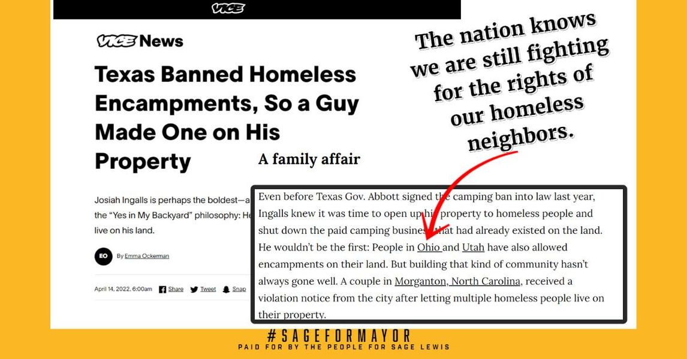

Timeline photos
Hey Dan (@[100064805494040:2048:City of Akron, Ohio - Mayor's Office]) I was reading this very interesting article about a guy in Texas who is currently sheltering homeless people on his private land.
You probably remember that I do that too.
WELL GUESS WHAT?
@[167115176655082:274:VICE] remembers too. They had a nice little reference to the work we are doing in Akron despite you fighting us every step of the way to do it. I'll leave a link to the article down below so you can learn more.
Have a nice day,
Sage
#sageformayor